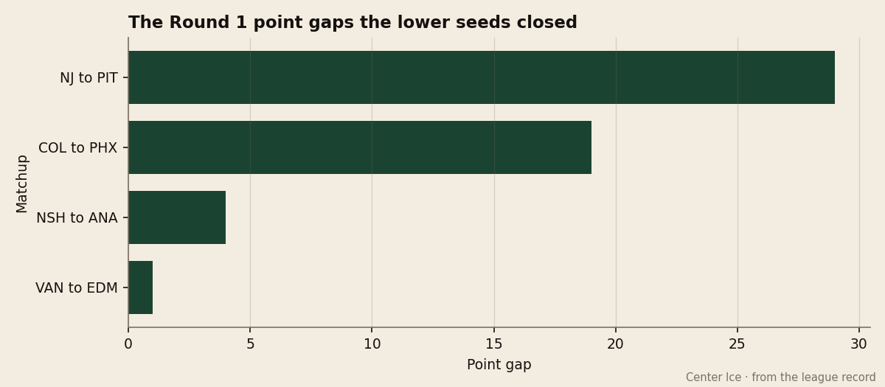
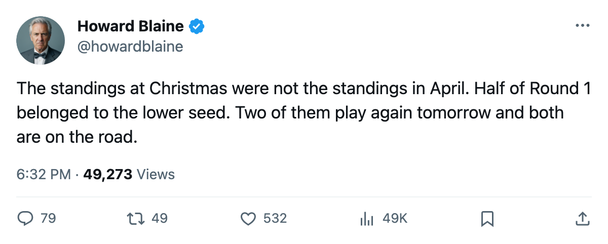
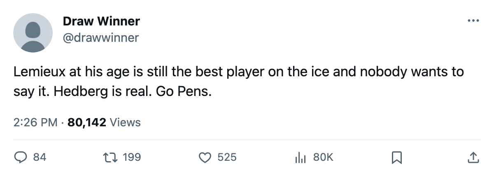

The Bracket, April 21: The lower seed won half of Round 1, and Round 2 opens tomorrow with gaps of 48 points and 1
Four first-round upsets ended Wednesday night. Two of the winners start Round 2 on the road.
 Howard BlaineSenior writer, The Blaine Rankings · The Hockey Gazette
Howard BlaineSenior writer, The Blaine Rankings · The Hockey GazetteRound 1 ended on Wednesday night when  Phoenix Coyotes beat
Phoenix Coyotes beat  Colorado Avalanche 4-3 in a seventh game, and the bracket now looks little like the regular-season table. Four of the eight first-round series were won by the lower seed. Two of those clubs play their opening Round 2 game tomorrow, both on the road.
Colorado Avalanche 4-3 in a seventh game, and the bracket now looks little like the regular-season table. Four of the eight first-round series were won by the lower seed. Two of those clubs play their opening Round 2 game tomorrow, both on the road.
Four upsets and how close they were
 Pittsburgh Penguins beat
Pittsburgh Penguins beat  New Jersey Devils 4 games to 2. The gap between them was 29 points, the largest a lower seed closed in this round. Five of the six games were decided by one goal, and Game 6 went to overtime on a Pittsburgh winner.
New Jersey Devils 4 games to 2. The gap between them was 29 points, the largest a lower seed closed in this round. Five of the six games were decided by one goal, and Game 6 went to overtime on a Pittsburgh winner.  Mario Lemieux88 carries 2 goals and 6 assists through 6 playoff games at 39 years old.
Mario Lemieux88 carries 2 goals and 6 assists through 6 playoff games at 39 years old.  Johan Hedberg87 gave up 2.00 goals a night across the series. New Jersey had the cheapest offense in the league at $0.40M a point and went out in six games to a club that finished 48 points behind in the standings.
Johan Hedberg87 gave up 2.00 goals a night across the series. New Jersey had the cheapest offense in the league at $0.40M a point and went out in six games to a club that finished 48 points behind in the standings.
Phoenix Coyotes beat Colorado Avalanche 4 games to 3. Colorado entered as the top seed in the Western Conference at 112 points. Phoenix finished at 93, 19 points back, and drew the 8th seed.  Mike Johnson87 scored 9 goals in 7 games.
Mike Johnson87 scored 9 goals in 7 games.  Sean Burke88 posted a 2.44 goals-against across the series. Colorado carried
Sean Burke88 posted a 2.44 goals-against across the series. Colorado carried  Peter Forsberg95 at 129 points and
Peter Forsberg95 at 129 points and  Teemu Selanne87 at 104 for the season and lost to a club that finished 19 points behind.
Teemu Selanne87 at 104 for the season and lost to a club that finished 19 points behind.
 Mighty Ducks of Anaheim beat
Mighty Ducks of Anaheim beat  Nashville Predators 4 games to 2. Two of the six games went to overtime.
Nashville Predators 4 games to 2. Two of the six games went to overtime.  Jean-Sebastien Giguere97 allowed 1.86 goals a night across the round. Nashville had 101 points and the 3rd Western seed. Anaheim had 97.
Jean-Sebastien Giguere97 allowed 1.86 goals a night across the round. Nashville had 101 points and the 3rd Western seed. Anaheim had 97.
 Edmonton Oilers beat
Edmonton Oilers beat  Vancouver Canucks 4 games to 2. The point gap between these two clubs was 1, the tightest in the bracket. Five of the six games were decided by one goal, and two went to overtime.
Vancouver Canucks 4 games to 2. The point gap between these two clubs was 1, the tightest in the bracket. Five of the six games were decided by one goal, and two went to overtime.  Markus Naslund89 posted 8 goals and 5 assists in 6 games, the highest point total of any player in Round 1, and his club is out.
Markus Naslund89 posted 8 goals and 5 assists in 6 games, the highest point total of any player in Round 1, and his club is out.  Mike York79 carried Edmonton with 3 goals and 8 assists.
Mike York79 carried Edmonton with 3 goals and 8 assists.

Four results the table predicted
 Toronto Maple Leafs beat
Toronto Maple Leafs beat  New York Islanders 4 games to 1 across a 49-point gap, the widest margin in either conference.
New York Islanders 4 games to 1 across a 49-point gap, the widest margin in either conference.  Roberto Luongo92 has a 1.41 goals-against and a .963 save percentage through 5 games.
Roberto Luongo92 has a 1.41 goals-against and a .963 save percentage through 5 games.  Marian Gaborik96 leads the club with 3 goals and 8 points.
Marian Gaborik96 leads the club with 3 goals and 8 points.
 Washington Capitals swept
Washington Capitals swept  Carolina Hurricanes 4 games to 0, the fastest exit in the round.
Carolina Hurricanes 4 games to 0, the fastest exit in the round.  Olaf Kolzig87 gave up 1.00 goals a night.
Olaf Kolzig87 gave up 1.00 goals a night.  Jaromir Jagr84 scored no goals and 9 assists in 4 games, all of it setup for
Jaromir Jagr84 scored no goals and 9 assists in 4 games, all of it setup for  Robert Lang75 at 5 goals and
Robert Lang75 at 5 goals and  Pascal Dupuis74 at 4.
Pascal Dupuis74 at 4.
 Dallas Stars swept
Dallas Stars swept  Detroit Red Wings 4 games to 0.
Detroit Red Wings 4 games to 0.  Marty Turco94 allowed 1.17 goals a night.
Marty Turco94 allowed 1.17 goals a night.  Mike Modano88 has 4 goals and 2 assists through 4 games.
Mike Modano88 has 4 goals and 2 assists through 4 games.
 Tampa Bay Lightning beat
Tampa Bay Lightning beat  Boston Bruins 4 games to 2.
Boston Bruins 4 games to 2.  Nikolai Khabibulin92 has a 1.99 goals-against across 6 games with 1 shutout.
Nikolai Khabibulin92 has a 1.99 goals-against across 6 games with 1 shutout.  Cory Stillman84 leads the club with 4 goals and 5 points.
Cory Stillman84 leads the club with 4 goals and 5 points.
Round 2: the widest gap in the bracket meets the narrowest
All four Round 2 series are scoreless.
| Series | Gap | First game | Regular season |
|---|---|---|---|
| (1) TOR v (7) PIT | 48 pts | April 22 at TOR | TOR 4-0-0, 20-9 |
| (3) TB v (4) WSH | 3 pts | April 23 at TB | TB 2-2-1, 14-19 |
| (2) DAL v (8) PHX | 16 pts | April 22 at DAL | DAL 3-2-0, 15-13 |
| (5) EDM v (6) ANA | 1 pt | April 23 at EDM | Split, 2-2, 11-11 |
Toronto Maple Leafs and Pittsburgh Penguins open the round tomorrow at Toronto. The Maple Leafs went 4-0-0 against Pittsburgh in the regular season, outscoring them 20-9 across 4 meetings. Pittsburgh is the lowest-seeded club left in the tournament, the 7th seed that closed 29 points on New Jersey in six games.
Tampa Bay Lightning and Washington Capitals meet Saturday at Tampa Bay. The regular-season head-to-head went 2 wins, 2 losses and 1 overtime loss for Tampa Bay, though Washington held a 19-14 goal advantage across 5 games. Jagr and his 9 playoff assists face  Vincent Lecavalier90 at 105 points in 59 games and
Vincent Lecavalier90 at 105 points in 59 games and  Martin St. Louis87 at 114 in 82.
Martin St. Louis87 at 114 in 82.
Dallas Stars hosts Phoenix Coyotes tomorrow. Dallas went 3-2-0 against Phoenix across 5 regular-season meetings, 15-13 on goals. Phoenix is the 8th seed that beat the 1st, and Johnson leads all playoff scorers in this bracket at 9 goals.
Edmonton Oilers and Mighty Ducks of Anaheim meet Saturday at Edmonton. These clubs split 4 meetings, with each winning 1 game in regulation and 1 in overtime, and finished with identical goal totals at 11. Both were lower seeds in Round 1 and both won.
Out
Eight clubs are eliminated: Boston Bruins, New York Islanders, Carolina Hurricanes, New Jersey Devils, Nashville Predators, Colorado Avalanche, Detroit Red Wings, Vancouver Canucks. New Jersey won 114 points on a payroll of $45.15M and the league's lowest cost per point at $0.40M. Colorado won 112 points and the Western Conference. Neither survived the round the standings said they should own.

